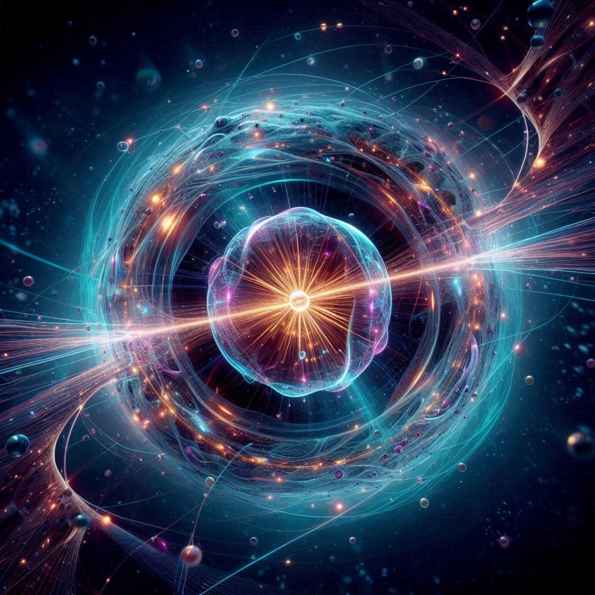

La física moderna es una rama fascinante de la física que emergió en el siglo XX, transformando radicalmente nuestra comprensión del universo en escalas tanto macroscópicas como microscópicas. En particular, se destacan dos teorías fundamentales que marcaron el inicio de esta era: la teoría de la relatividad de Albert Einstein y la mecánica cuántica. La teoría de la relatividad, formulada en dos vertientes (la especial en 1905 y la general en 1915), revolucionó nuestra concepción del espacio, el tiempo y la gravedad. Proporcionó un marco conceptual completamente nuevo para entender cómo interactúan el espacio y el tiempo, demostrando que son entidades dinámicas que pueden deformarse bajo la influencia de la masa y la energía. Por otro lado, la mecánica cuántica, desarrollada en las primeras décadas del siglo XX, cambió radicalmente nuestra comprensión del mundo subatómico, introduciendo el concepto de dualidad onda-partícula, el principio de incertidumbre de Heisenberg y la noción de entrelazamiento cuántico. Estas dos teorías forman los pilares de la física moderna y han abierto nuevas perspectivas para explorar los fenómenos físicos en los límites extremos del universo.
La Física de Partículas busca respuesta a estas y otras preguntas relacionadas con las partículas que forman todo lo que vemos y las fuerzas que las gobiernan. Se basa en el Modelo Estándar, una teoría cuántica de campos que describe la materia y el vacío considerando que las partículas elementales son paquetes de energía e irreductibles. A pesar de que, desde su creación, en 1970, las pruebas experimentales han confirmado sus predicciones, no se le puede considerar aún una teoría completa a causa de una serie de insuficiencias.
El llamado Modelo Estándar de las partículas elementales no es propiamente un modelo, es una teoría. Y de las mejores que tenemos. Alias, en la opinión de muchos físicos, la mejor de todas sobre la naturaleza de la materia.
De acuerdo con el Modelo Estándar, leptones y quarks son partículas verdaderamente elementales, en el sentido de que no poseen estructura interna. Las partículas que tienen estructura interna se llaman hadrones; están constituidas por quarks: bariones cuando están formadas por tres quarks o tres antiquarks, o mesones cuando están constituidas por un quark y un antiquark.
Hay seis leptones (electrón, muón, tau, neutrino del electrón, neutrino del muón y neutrino del tau) y seis quarks [quark up (u) quark down (d), quark charm (c), quark extraño (s), quark bottom (b) y quark top (t)]. Sin embargo, los quarks tienen una propiedad llamada color y cada uno puede presentar tres colores (rojo, verde y azul). Hay, por tanto, 18 quarks. Pero, como a cada partícula le corresponde una antipartícula4, existirían en total 12 leptones y 36 quarks.
La física cuántica trata del comportamiento de las cosas más pequeñas que conocemos. Realmente se trata de cosas muy pequeñas. En efecto, observemos dos dedos de nuestra mano verticalmente. El diámetro de un átomo guarda aproximadamente con el espesor de los dos dedos la misma relación que este espesor con el diámetro de la tierra (10-8 cm es a 3 cm como 3 cm es a 10º cm). Nuestras predicciones respecto a cómo se comportan estas cosas se encuentran mediatizadas por las experiencias con objetos suficientemente grandes para ser vistos y manipulados; no importa que estas predicciones sean falsas a veces cuando se aplican a objetos tan pequeños como un átomo. Del mismo modo, las leyes «clásicas» de la física, particularmente la mecánica newtoniana, ideada para describir el comportamiento de objetos de tamaño visible deben modificarse y en algunos aspectos completamente reemplazadas- a fin de explicar el comportamiento de los átomos y las partículas subatómicas.
Aunque el mundo de lo muy pequeño está muy alejado de nuestros sentidos, influye realmente en cada experiencia diaria. Casi todo lo que vemos y tocamos (junto con los impulsos nerviosos y la luz, los mensajeros del tacto y de la vista) debe su carácter a la sútil arquitectura de átomos y moléculas, una arquitectura cuyo código de construcción es la mecánica cuántica. Y cuando tratamos los fenómenos a gran escala que dependen de un modo directo de los detalles de los procesos atómicos, por ejemplo, láseres, superconductores y electrónica del estado sólido- entonces el uso explícito de la física cuántica es esencial.
En cuanto nos introducimos en el mundo del átomo, nos encontramos en presencia de nuevos fenómenos, que requieren el estudio de nuevos conceptos para su análisis y descripción. El campo que estudia estos fenómenos, tanto a niveles atómicos como subatómicos se denomina teoría cuántica. De todas formas, como el comportamiento de la materia depende en última instancia de las propiedades de sus átomos constituyentes, todo intento de comprensión de los fenómenos físicos a escala macroscópica dependerá frecuentemente de la teoría cuántica.
que es de la que se hablará en este artículo y que permite explicar el comportamiento del espacio y del tiempo en función de un observador, fue propuesta por Albert Einstein en 1905.
1.-Principio de la Relatividad: Las leyes físicas son las mismas para todos los observadores
inerciales, es decir, aquellos en movimiento constante. No hay un marco de referencia absoluto;
la percepción de eventos puede variar según el observador. Por ejemplo, el movimiento relativo
entre un automóvil y una pelota cambia su trayectoria según quién esté observando.
2.-Invariancia de la velocidad de la luz: La velocidad de la luz en el vacío es constante e
independiente del movimiento relativo de la fuente o del observador. Esto significa que todos
los observadores, independientemente de su movimiento, medirán la misma velocidad para la luz.
3.-Dilatación del Tiempo y Contracción de Longitud: La dilatación del tiempo implica que un
objeto
en movimiento experimenta un paso del tiempo más lento desde el punto de vista de un observador
estacionario. La contracción de longitud indica que un objeto en movimiento parece más corto en
la dirección de su movimiento desde el punto de vista de un observador estacionario.
• Principio de Equivalencia: La aceleración debido a la gravedad es equivalente a la aceleración
experimentada por un observador acelerado en un sistema de referencia no gravitacional. En otras
palabras, la gravedad no se experimenta como una fuerza en sí misma, sino como una curvatura del
espacio-tiempo.
• Curvatura del Espacio-Tiempo: La presencia de masa y energía curva el espacio-tiempo a su
alrededor. Esto se puede visualizar como si pones una bola pesada sobre una sábana elástica; la
bola hace que la sábana se deforme, y cualquier objeto que pase cerca de la bola seguirá una
trayectoria curva debido a la deformación del espacio-tiempo. Esta curvatura es lo que
percibimos como gravedad.
• Relatividad del Tiempo y de la Energía: La masa y la energía deforman el espacio-tiempo,
afectando tanto la geometría del espacio como el flujo del tiempo. Esto significa que el tiempo
y el espacio no son entidades separadas e independientes, sino que están intrínsecamente
relacionados.
Que intenta explicar el porqué de la gravedad, mediante la generalización de la Teoría de la Relatividad Especial, fue propuesta por Albert Einstein en 1915.
1. Las leyes de la física son las mismas en todos los marcos de referencia inerciales. Por tanto,
todo movimiento es relativo. La velocidad de un objeto sólo puede darse en relación con otro objeto.
2. La rapidez de la luz en el vacío, c, tiene el mismo valor para todos los observadores,
independiente del movimiento de la fuente (o del movimiento del observador).
La teoría de la relatividad especial cristalizó a partir de la teoría de Maxwell-Lorentz de los
fenómenos electromagnéticos, por lo cual todos los hechos experimentales que apoyan esa teoría
electromagnética apoyan también la teoría de la relatividad.x
Se entiende por partículas subatómicas a las estructuras de la materia que son más pequeñas que el
átomo y que, por ende, forman parte de éste y determinan sus propiedades. Dichas partículas pueden
ser de dos tipos: compuestas (divisibles) o elementales (indivisibles).
A lo largo de la historia, el ser humano ha estudiado la materia y ha propuesto diversas teorías y
aproximaciones más o menos científicas a las partículas más pequeñas que existen, las que lo
componen todo.
Hasta 1932 las únicas partículas subatómicas que se conocían eran las partículas alfa, el electrón y
los protones, pero en dicho año el físico inglés Chadwick descubrió el neutrón, y enseguida se vio
que junto al protón constituían los dos componentes esenciales del núcleo. Al protón y al neutrón se
les llama nucleones y forman todos los núcleos de todos los elementos que se conocen, salvo el del
hidrógeno, que está formado por un único protón.
• Protones: Partículas con carga eléctrica positiva que se encuentran en el núcleo de un átomo.
Determinan el tipo de elemento químico.
• Neutrones: Partículas eléctricamente neutras que también están en el núcleo de un átomo.
Ayudan a mantener unido el núcleo atómico.
• Electrones: Partículas con carga eléctrica negativa que orbitan alrededor del núcleo. Son
responsables de las propiedades químicas y de la formación de enlaces entre átomos.
El modelo estándar clasifica las partículas fundamentales que forman estas partículas en dos
clases:
• Fermiones, que pueden ser quarks o leptones: Partículas obedecen principio de exclusión de
Pauli. Quarks son componentes básicos de protones y neutrones. Leptones incluyen electrones y
neutrinos.
• Bosones: Partículas que no siguen el principio de exclusión de Pauli. Ejemplos: fotones
(partículas de luz), bosones W y Z (interacciones débiles).

Son partículas subatómicas que obedecen las estadísticas de Bose-Einstein y tienen espín entero. Los bosones son responsables de mediar las interacciones fundamentales entre partículas elementales.
Es el bosón mediador de la fuerza electromagnética. Es una partícula sin masa y carga eléctrica que se mueve a la velocidad de la luz y es responsable de la transmisión de la radiación electromagnética, como la luz.
Es uno de los bosones mediadores de la fuerza débil en el Modelo Estándar de la física de partículas. Existen dos tipos de bosones W: W⁺ y W⁻, que se encargan de la interacción de corriente cargada en procesos de desintegración nuclear.
Es otro bosón mediador de la fuerza débil en el Modelo Estándar. El bosón Z es neutro y juega un papel crucial en las interacciones débiles neutras.
Es el bosón mediador de la fuerza fuerte que mantiene unidos a los quarks dentro de los protones, neutrones y otras partículas subatómicas. Los gluones son responsables de la interacción fuerte en la cromodinámica cuántica.
Es una partícula elemental que da masa a otras partículas a través del mecanismo de Higgs en el Modelo Estándar. Fue descubierto experimentalmente en el Gran Colisionador de Hadrones en 2012.
Son partículas subatómicas que obedecen las estadísticas de Fermi-Dirac y tienen espín semientero. Los fermiones constituyen la materia y se dividen en dos categorías: leptones y quarks.
Son fermiones que no experimentan la interacción fuerte y están divididos en tres familias: electrónicos, muónicos y tauónicos. Cada familia incluye un neutrino asociado.
Es un leptón cargado negativamente que forma parte de la primera familia de leptones. Es fundamental en la estructura de los átomos y participa en las interacciones electromagnéticas.
Es una partícula subatómica cargada positivamente que se encuentra en el núcleo de los átomos junto con los neutrones. Está compuesto por quarks up y quarks down.
Es una partícula subatómica neutra que se encuentra en el núcleo de los átomos junto con los protones. Está compuesto por quarks up y quarks down.
Es un leptón más masivo que el electrón pero con características similares. Se clasifica en la segunda familia de leptones y se desintegra en partículas más ligeras.
Es un leptón aún más masivo que el muón y el electrón. Se clasifica en la tercera familia de leptones y también se desintegra en partículas más ligeras.
Es un neutrino asociado al electrón y pertenece a la primera familia de leptones. Es neutro y apenas interactúa con la materia, lo que lo hace difícil de detectar.
Es un neutrino asociado al muón y pertenece a la segunda familia de leptones. Al igual que otros neutrinos, es difícil de detectar debido a su baja interacción con la materia.
Es un neutrino asociado al tauón y pertenece a la tercera familia de leptones. También tiene una interacción débil con la materia, lo que lo hace difícil de observar experimentalmente.
Son fermiones que experimentan la interacción fuerte y están confinados en partículas compuestas llamadas hadrones (como protones y neutrones). Los quarks vienen en seis sabores o tipos: up, charm, top, down, strange y bottom.
Es uno de los seis tipos de quarks y tiene una carga eléctrica de +2/3e. Junto con el quark down, forma protones y neutrones en combinaciones diferentes.
Es otro tipo de quark con una carga eléctrica de +2/3e. Fue descubierto en experimentos de colisiones de partículas en la década de 1970.
Es el quark más masivo y tiene una carga eléctrica de +2/3e. Su masa es aproximadamente 170 veces la masa de un protón.
Es uno de los seis tipos de quarks y tiene una carga eléctrica de -1/3e. Junto con el quark up, forma protones y neutrones en combinaciones diferentes.
Es un tipo de quark con una carga eléctrica de -1/3e. Su nombre proviene de su descubrimiento en partículas llamadas "extrañas" en la década de 1950.
Es otro tipo de quark con una carga eléctrica de -1/3e. Fue descubierto en experimentos de colisiones de partículas en la década de 1970.
El principio de incertidumbre de Heisenberg es un principio clave de la mecánica cuántica. A grandes rasgos, afirma que si lo sabemos todo sobre dónde se encuentra una partícula (la incertidumbre de posición es pequeña), no sabemos nada sobre su momento (la incertidumbre de momento es grande), y viceversa. También existen versiones del principio de incertidumbre para otras magnitudes, como la energía y el tiempo. Hablamos sobre los principios de incertidumbre de momento-posición y energía-tiempo por separado.
Para ilustrar el principio de incertidumbre momento-posición, consideremos una partícula libre que se mueve a lo largo de la dirección de la x. La partícula se mueve con una velocidad constante u y un momento p=mu.
ElOtro tipo de principio de incertidumbre se refiere a las incertidumbres en las mediciones simultáneas de la energía de un estado cuántico y su tiempo de vida.
En 1935, E. Schrödinger publicó un importante artículo (“The Present Situation in Quantum Mechanics”), en el cual realizaba una revisión de las principales cuestiones acerca de la interpretación de la mecánica cuántica. En este artículo, Schrödinger incluía la famosa paradoja del gato “vivo y muerto” a partes iguales. El gato de Schrödinger se convirtió en un símbolo de los límites de la interpretación de Copenhague de la mecánica cuántica.
Schrödinger presenta su Gedankenexperiment de la siguiente manera: Un gato está encerrado en una cámara de acero, junto con el siguiente dispositivo diabólico (que debe asegurarse contra interferencia directa del gato): en un contador Geiger hay una pequeña cantidad de sustancia radiactiva tan pequeña, que quizás en el transcurso de una hora uno de los átomos se desintegra, pero también, con igual probabilidad, quizás ninguno. Si esto sucede, un proceso se desata que hace que un relé suelte un martillo que hace añicos un pequeño frasco de ácido cianhídrico. La primera desintegración atómica habría envenenado al gato. La función ψ de todo el sistema expresa este hecho al contener al gato vivo y al gato muerto mezclados en partes iguales. Es típico de estos casos que una indeterminación originalmente restringida a un dominio atómico se convierta en indeterminación macroscópica, que luego puede resolverse mediante observación directa.
Bernard d'Espagnat intentó aclarar un poco más el estado del gato dentro de la cámara y el papel del observador al afirmar: ‘Schrödinger luego señaló que, en estas condiciones, si el gato se considera un sistema cuántico y se describe mediante una función de onda, su estado es necesariamente una superposición cuántica de los dos estados ‘gato vivo’ y ‘gato muerto’, por lo que no debería en ningún caso considerarse vivo o muerto. Este estado de cosas continúa hasta que un ‘observador externo’ abre el contenedor y mira hacia adentro, ya que es solo a través del último proceso que el paquete de ondas es reducido y que, en uno de cada dos casos, el gato muere realmente’ (esta es la llamada Interpretación de Copenhague).